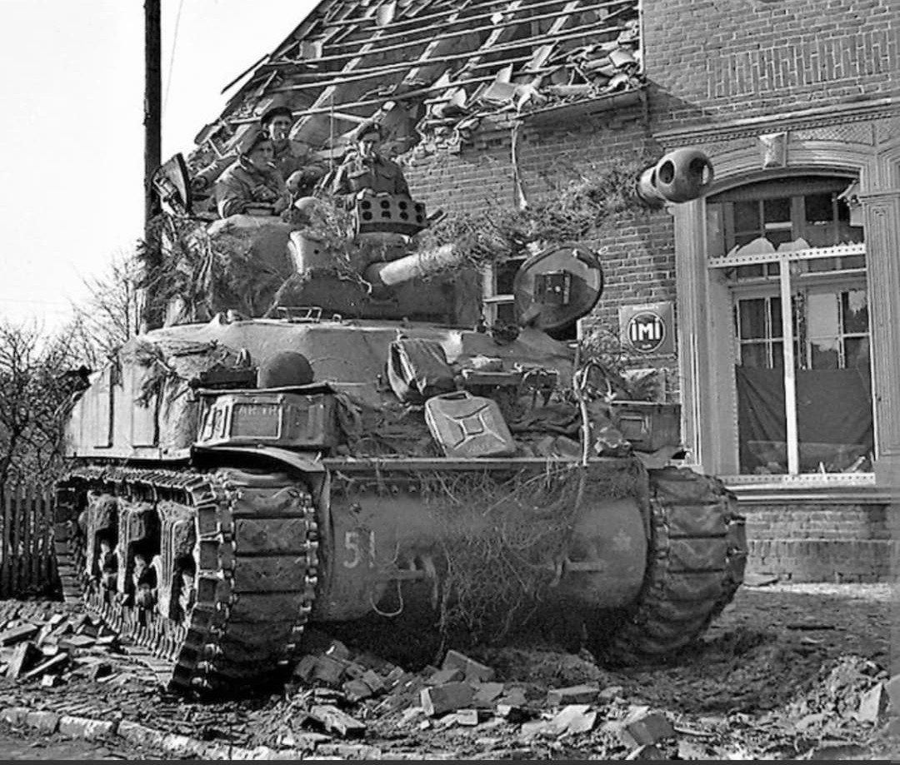
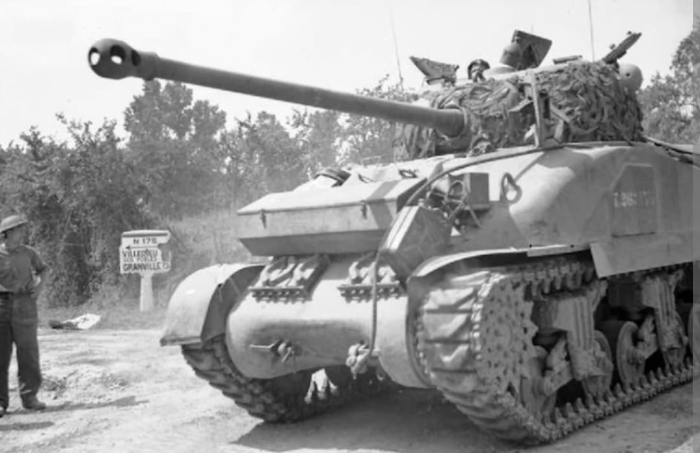
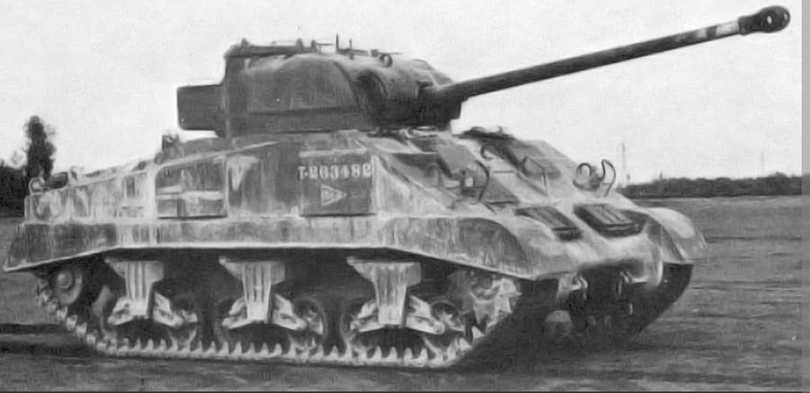

La conversion britannique géniale du char Sherman armée du redoutable canon antichar de 17 livres

Le **Sherman Firefly** est une modification britannique du char moyen américain M4 Sherman, réalisée pendant la Seconde Guerre mondiale pour doter les forces alliées d'une puissance de feu capable de percer le blindage des chars lourds allemands (Tiger et Panther).
En combinant la fiabilité mécanique exceptionnelle du châssis Sherman au redoutable canon antichar britannique de 17 livres, les ingénieurs ont créé l'un des chasseurs de chars officieux les plus efficaces et craints des équipages de la Wehrmacht.
Au début de l'année 1943, l'armée britannique fait face à une urgence tactique : les canons de 75 mm standard des Sherman et les canons de 6 livres des chars de croisière peinent à détruire les nouveaux blindés lourds allemands en combat frontal. Le canon antichar **QF 17-pounder (76,2 mm)** offre des performances balistiques exceptionnelles, mais aucun char britannique n'est encore prêt en grand nombre pour l'accueillir.
L'ingénieur britannique **George Witheridge** conçoit alors le projet audacieux d'installer cette arme colossale dans la tourelle d'un Sherman fourni par les États-Unis via le Prêt-Bail (*Lend-Lease*). Pour y parvenir, la culasse du canon est modifiée (pivotée sur le côté), le poste du mitrailleur avant est supprimé pour stocker des munitions supplémentaires, et un boîtier blindé distinct est soudé à l'arrière de la tourelle pour loger la radio et faire contrepoids.

Déployés à partir de juin 1944 pour le **débarquement de Normandie**, les Firefly sont rapidement identifiés par les Allemands, qui ordonnent à leurs équipages de les cibler en priorité pour neutraliser la menace qu'ils représentent.
Pour tromper l'ennemi, certains commandants britanniques et canadiens tentent de camoufler le long tube du canon (en y peignant des illusions d'optique ou un faux bout de canon plus court). Intégrés au rythme d'environ un Firefly par peloton de quatre chars (aux côtés des Sherman classiques), ils se révèlent décisifs lors de la poche de Falaise et des combats d'avancée vers l'Allemagne.

Environ **2 100 à 2 200 exemplaires** de Sherman Firefly sont produits entre 1944 et 1945. Bien que les États-Unis aient conçu leurs propres versions de chars armés de canons longs (comme le Sherman M4A3E8 *Easy Eight* ou le M36 Jackson), le Firefly demeure le symbole par excellence de l'ingéniosité technique britannique pour rééquilibrer le rapport de force blindé en Europe.
Page du Musée HOP WW2 – Section Véhicules Terrestres Britanniques